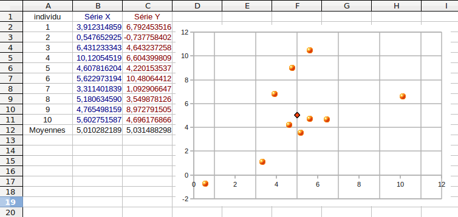

| Choisissez votre langue ! | Choose your language ! |
Corrélation
Correlation
Séries doubles
Commençons avec le cas de deux caractères numériques X et Y.Les individus sont assimilés à des numéros 1,2, ... ,n.
Pour chaque individu i 1 ≤ i ≤ n on a donc une valeur xi=X(i) et une valeur yi=Y(i), déterminant un point du plan de coordonnées (xi,yi).
Double series
Let's start with the case of two numeric characters X and Y.Individuals are assimilated to numbers 1,2, ... ,n.
For each individual 1 ≤ i ≤ n we therefore have a value xi=X(i) and a value yi=Y(i), determining a point (x i,yi) of the coordinate plane.

Distributions conditionnelles
Lorsque nous affirmons qu'un caractère est 'indépendant du sexe' nous voulons dire que pour chaque modalité de ce caractère la fréquence totale (rapportée à la population) est égale à la fréquence de cette modalité restreinte à la population mâle et encore égale à la fréquence de cette modalité restreinte à la population femelle.Nous allons maintenant donner un sens précis à tout cela.
Nous considérons une population P d'effectif n et sur cette population 2 caractères X et Y (non nécessairement quantitatifs).
Pour le caractère X nous supposons qu'il y a p modalités distinctes x1, x2, ... ,xp.
Pour le caractère Y nous supposons qu'il y a q modalités distinctes y1, y2, ... ,yq.
Pour chaque couple (xi,yj) nous désignons par nij le nombre d'individus dont le caractère X vaut xi et le caractère Y vaut yj.
Autrement dit, en language ensembliste : nij=Card(X-1(xi)∩Y-1(yj)).
Les données peuvent donc être représentées par une matrice rectangulaire (ci-après en blanc) à coefficients entiers à p lignes et q colonnes.
Conditional distributions
When we affirm that a character is 'independent of sex' we mean that for each modality of this character the total frequency (relative to the population) is equal to the frequency of this modality restricted to the male population and again equal to the frequency of this modality restricted to the female population.We will now give a precise meaning to all of this.
We consider a population P of size n and on this population 2 characters X and Y (not necessarily quantitative).
For character X we assume that there are p distinct modalities x1, x2, ... ,xp.
For character Y we assume that there are q distinct modalities y1, y2, ... ,yq.
For each couple (xi,yj) we denote by nij the number of individuals whose character X is equal to xi and character Y is yj.
In other words, in set language: nij=Card(X-1(xi)∩Y-1(yj)).
The data can therefore be represented by a rectangular matrix (hereafter in white with integer coefficients with p rows and q columns.
| X\Y |
y1
|
y2
|
... |
yq
|
Sommes
des lignes Sums
of rows |
| x1
|
n11
|
n12
|
... |
n1q
|
n1+
|
| x2
|
n21
|
n22
|
... |
n2q
|
n2+
|
| ... |
... |
... |
... |
... |
... |
| xp
|
np1
|
np2
|
|
npq
|
np+
|
|
Sommes
des colonnes Sums
of columns |
n+1
|
n+2
|
... |
n+q
|
n |
\( \displaystyle n_{i +} = {\sum\limits_{j = 1}^{q}n_{ij}} \)
\( \displaystyle n_{+ j} = {\sum\limits_{i = 1}^{p}n_{ij}} \)
De sorte que ni+ est l'effectif de la modalité xi, et n+j est l'effectif de la modalité yj.Nous avons donc :
\( \displaystyle {\sum\limits_{i,j}^{}n_{ij}} = {\sum\limits_{i = 1}^{p}n_{i +} = {\sum\limits_{j = 1}^{q}n_{+ j}} = n} \)
La suite ((x1,n1+),(x2,n2+), ... ,(xp,np+)) constitue donc la en effectifs du caractère X indépendamment de Y, de même que la suite ((y1,n+1),(y2,n+2), ... ,(yq,n+q)) constitue la distribution de Y indépendamment de X.\( \displaystyle n_{i+}={\sum\limits_{j=1}^{q}n_{ij}} \)
\( \displaystyle n_{+j}={\sum\limits_{i=1}^{p}n_{ij}} \)
So that ni+ is the frequency of modality xi, and n+j is the frequency of modality yj.So we have :
\( \displaystyle {\sum\limits_{i,j}^{}n_{ij}} = {\sum\limits_{i = 1}^{p}n_{i +} = {\sum\limits_{j = 1 }^{q}n_{+ j}} = n} \)
The sequence ((x1,n1+),(x2,n2+), . .. ,(xp,np+)) therefore constitutes the in tallies of the variable X independently of Y, as well as the sequence ((y1,n+1) ,(y2,n+2), ... ,(yq,n+q) ) is the distribution of Y independent of X.Distribution conditionnelle de Y pour X=xi
On considère seulement la partie de la population totale dont la modalité pour X est xi, soit en langage ensembliste X-1(xi).Alors la restriction de Y à cette partie est un caractère dont la distribution en effectifs est donnée par la ligne i de la matrice ci-dessus.
Par ailleurs, la distribution en fréquences s'obtient en divisant chaque coefficient par ni+.
Distribution conditionnelle de X pour Y=yj
On considère seulement la partie de la population totale dont la modalité pour Y est yj, soit en langage ensembliste Y-1(yj).Alors la restriction de X à cette partie est un caractère dont la distribution en effectifs est donnée par la colonne j de la matrice ci-dessus.
Par ailleurs, la distribution en fréquences s'obtient en divisant chaque coefficient par n+j.
Indépendance statistique
Conditional distribution of Y for X=xi
We consider only the part of the total population whose modality for X is xi, i.e. in set theoretic language X-1(xi) .Then the restriction of Y to this part is a variable whose frequency distribution is given by row i of the matrix above.
Moreover, the frequency distribution is obtained by dividing each coefficient by ni+.
Conditional distribution of X for Y=yj
We consider only the part of the total population whose modality for Y is yj, i.e. in set theoretic language Y-1(yj) .Then the restriction of X to this part is a variable whose frequency distribution is given by column j of the matrix above.
Furthermore, the frequency distribution is obtained by dividing each coefficient by n+j.
Statistical independence
\( \displaystyle \frac{n_{ij}}{n_{i +}} = \frac{n_{+ j}}{n} \)
Soit encore :\( \displaystyle n_{ij} = \frac{n_{i +} \times n_{+ j}}{n} \)
ou bien :\( \displaystyle \frac{n_{ij}}{n} = \frac{n_{i +}}{n} \times \frac{n_{+ j}}{n} \)
Cette dernière égalité peut s'exprimer ainsi en termes de fréquences :f((X=xi)et(Y=yj))=f(X=xi)×f(Y=yj)
\( \displaystyle \frac{n_{ij}}{n_{i +}} = \frac{n_{+ j}}{n} \)
Or again:\( \displaystyle n_{ij} = \frac{n_{i +} \times n_{+ j}}{n} \)
or :\( \displaystyle \frac{n_{ij}}{n} = \frac{n_{i +}}{n} \times \frac{n_{+ j}}{n} \)
This last equality can be expressed in terms of frequencies as follows:f((X=xi)and(Y=yj))=f(X=xi)×f(Y =yj)
\( \displaystyle \overline{XY} = \overline{X}.\overline{Y} \)
\( \displaystyle \overline{XY} = \overline{X}.\overline{Y} \)
\( \displaystyle \overline{XY} = \frac{1}{n}{\sum\limits_{i = 1}^{p}{\sum\limits_{j = 1}^{q}n_{ij}x_{i}y_{j}}} = \frac{1}{n}{\sum\limits_{i = 1}^{p}x_{i}{\sum\limits_{j = 1}^{q}\frac{n_{i +}n_{+ j}}{n}y_{j}}} = \frac{1}{n}{\sum\limits_{i = 1}^{p}x_{i}n_{i +}\frac{1}{n}{\sum\limits_{j = 1}^{q}n_{+ j}y_{j}}} = \frac{1}{n}{\sum\limits_{i = 1}^{p}x_{i}n_{i +}\overline{Y}} = \overline{X}.\overline{Y} \)
Voir plus bas un contre exemple.
\( \displaystyle \overline{XY} = \frac{1}{n}{\sum\limits_{i = 1}^{p}{\sum\limits_{j = 1}^{q}n_{ij}x_{ i}y_{j}}} = \frac{1}{n}{\sum\limits_{i = 1}^{p}x_{i}{\sum\limits_{j = 1}^{q}\ frac{n_{i +}n_{+ j}}{n}y_{j}}} = \frac{1}{n}{\sum\limits_{i = 1}^{p}x_{i}n_ {i +}\frac{1}{n}{\sum\limits_{j = 1}^{q}n_{+ j}y_{j}}} = \frac{1}{n}{\sum\ limits_{i = 1}^{p}x_{i}n_{i +}\overline{Y}} = \overline{X}.\overline{Y} \)
See a counterexample below.
covariance
Ce paragraphe ne concerne que les caractères numériques.Nous cherchons un critère (la covariance) pour mesurer la dépendance (ou son contraire) de deux caractères X1 et X2. Si X1 et X2 sont fortement liés, on pourrait penser définir la covariance en développant l'idée suivante :
- Quand X1 prend une valeur positive, alors X2 prend vraisemblablement aussi une valeur positive.
- Quand X1 prend une valeur négative alors X2 prend vraisemblablement aussi une valeur négative.
- Quand (X1 - µ1) prend une valeur positive, alors (X2 - µ2 ) prend vraisemblablement aussi une valeur positive.
- Quand (X1 - µ1) prend une valeur négative alors (X2 - µ2 ) prend vraisemblablement aussi une valeur négative.
- Simultanément positives, ou
- Simultanément négatives.
- Soit parce que les deux quantités sont positives,
- Soit parce que les deux quantités sont négatives.
We are looking for a criterion (the covariance) to measure the dependence (or its opposite) of two variables X1 and X2. If X1 and X2 are strongly related, one could think of defining the covariance by developing the following idea:
- When X1 takes a positive value, then X2 is also likely to take a positive value.
- When X1 takes a negative value then X2 is also likely to take a negative value.
- When (X1 - µ1) takes a positive value, then (X2 - µ2 ) presumably also takes a positive value.
- When (X1 - µ1) takes a negative value then (X2 - µ2 ) presumably also takes a negative value.
- Simultaneously positive, or
- Simultaneously negative.
- Either because both quantities are positive,
- Either because both quantities are negative.
\( \displaystyle Cov(X,Y)=\overline{\left( {X - \overline{X}} \right)\left( {Y - \overline{Y}} \right)} \)
\( \displaystyle Cov(X,Y)=\overline{\left( {X - \overline{X}} \right)\left( {Y - \overline{Y}} \right)} \)
\( \displaystyle {Cov}(X,Y) = \overline{XY} - \overline{X}.\overline{Y} \)
\( \displaystyle {Cov}(X,Y) = \overline{XY} - \overline{X}.\overline{Y} \)
Prendre par exemple une population à 3 éléments et le caractère X=(-1,0,1) et prendre Y=X2.
On a
\( \displaystyle \overline{X} = \overline{X^{3}} = 0 \)
X et Y ne sont pas indépendants puisque la matrice des nij est\( \displaystyle \begin{pmatrix} 0 & 1 \\ 1 & 0 \\ 0 & 1 \end{pmatrix} \)
On a cependant\( \displaystyle {Cov}(X,Y) = \overline{XY} - \overline{X}.\overline{Y}=0 \)
Take for example a population with 3 elements and the variable X=(-1,0,1) and take Y=X2.
We have
\( \displaystyle \overline{X} = \overline{X^{3}} = 0 \)
X and Y are not independent since the matrix of nij is\( \displaystyle \begin{pmatrix} 0 & 1 \\ 1 & 0 \\ 0 & 1 \end{pmatrix} \)
We have however\( \displaystyle {Cov}(X,Y) = \overline{XY} - \overline{X}.\overline{Y}=0 \)
- Cov(X,a)=0
- Cov(X,X)=Var(X)
- Cov(X,Y)=Cov(Y,X)
- Cov(aX,bY)=abCov(X,Y)
- Cov(X+a,Y+b)=Cov(X,Y)
- Cov(aX+bY,cW+dV)=acCov(X,W)+adCov(X,V)+bcCov(Y,W)+bdCov(Y,V)
- Cov(X,a)=0
- Cov(X,X)=Var(X)
- Cov(X,Y)=Cov(Y,X)
- Cov(aX,bY)=abCov(X,Y)
- Cov(X+a,Y+b)=Cov(X,Y)
- Cov(aX+bY,cW+dV)=acCov(X,W)+adCov(X,V)+bcCov(Y,W)+bdCov(Y,V)
Le coin de Python
Ce programme calcule une covariance :Python's Corner
This program calculates a covariance:
Le coin de Julia
Équivalent avec Julia 1.6 :
Julia's corner
Equivalent with Julia 1.6:
|
Création Gilles Dubois - licence CC-BY-SA
Created by Gilles Dubois - licence CC-BY-SA
|
Septembre 2023
September 2023
|
Version mobile Jquery
Mobile Jquery version
|
|